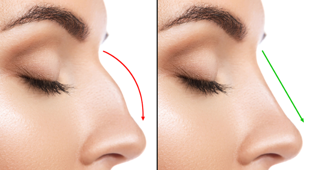

Rinoplastia
Nuestra Filosofía: La Nariz Natural y Proporcionada
La forma de la nariz tiene claramente una base genética y étnica. De cualquier forma, existen en nuestra civilización occidental greco-romana, desde hace miles de años, determinados patrones de belleza representados en el arte, que encuadran lo que podría considerarse bello. Pero no todo lo que sale de esos cánones debería considerarse menos bello. Es así que en algunas personas, una giba nasal leve, puede resultar atractiva y en otras no. Mucho depende de las proporciones generales y de la apreciación personal. Las proporciones áureas se ven en narices bellas, pero también existen narices atractivas que salen de las proporciones áureas.
La Rinoplastia Estética bien realizada es uno de los procedimientos que mas embellece la cara. Nuestra filosofía es buscar resultados naturales que se adaptan de forma equilibrada a las proporciones faciales del paciente. El éxito de la cirugía radica en que logremos perfeccionar y armonizar la nariz, sin que se note de forma evidente que la persona se operó.
Es importante que quien pretenda realizarse una rinoplastia estética tenga metas realistas, es decir que busque armonizar y proporcionar su propia nariz de manera elegante, acorde a sus propios rasgos y no implantar rasgos de otra persona, que posiblemente lo relacione con determinados patrones de éxito social. En este sentido, tener metas realistas es fundamental para el éxito del procedimiento. Vemos personas que tienen narices armónicas, pero consultan con expectativas poco realistas, buscando tener la nariz de un actor o actriz determinada, intentando implantar en su cara, una nariz que nada tiene que ver con sus proporciones faciales y su fisonomía. Estas son personas que, de operarse, pueden tener altos índices de insatisfacción por lo que deben cuestionarse realmente si requieren operarse.
La nariz desviada o con rasgos exagerados como; una punta muy globosa o deformada, una giba o dorso nasal aguileño o muy saliente, un ángulo naso-labial muy cerrado o abierto, resultan la mayoría de las veces una nariz inestética ya que se aparta mucho de las proporciones armónicas habituales. Los defectos estéticos nasales también pueden resultar por motivos adquiridos como traumatismos o infecciones nasales u otros motivos varios, los cuales pueden tener también asociados alteraciones funcionales y problemas respiratorios.
Qué es la rinoplastia estética?
La rinoplastia estética es un procedimiento delicado y complejo, que requiere una visión muy clara de la armonía y las proporciones faciales en su conjunto, mucha precisión, así como también un profundo conocimiento de las diferentes unidades estéticas de la nariz, de la anatomía nasal, de la función nasal y de las diferentes técnicas para corregir los diferentes defectos.
El objetivo es lograr, más que una "nariz perfecta" (que algunas veces puede resultar en resultados muy parecidos entre ellos), una nariz armónica, delicada, proporcionada y personalizada a la cara de cada paciente y que esa mejora esté totalmente integrada a la fisonomía de la persona. Como dijimos, el secreto es que no resulte evidente que se ha realizado una rinoplastia. Por eso este procedimiento debe buscar suavizar, atenuar y proporcionar los rasgos naturales de la persona buscando perfeccionar el conjunto del rostro.
La evaluación preoperatoria de la nariz en el contexto de toda la cara es de suma importancia. Se debe valorar forma, tamaño, proporciones nasales y la simetría. Los diferentes ángulos entre la nariz y la frente o el labio superior, la punta nasal, el dorso, la base de implantación, el ancho nasal y la forma de las narinas, entre otras medidas. El grosor de la piel es un factor muy importante para predecir los resultados de una rinoplastia.
Es sumamente importante también la valoración de la función nasal, de si existe un flujo normal de aire por ambas narinas, si existen desviaciones de tabique nasal o septum, hipertrofias de cornetes, etc, que limiten el flujo de aire. Por ello es que una rinoplastia estética en muchos casos está íntimamente asociada con una rinoplastia funcional para mejorar también la respiración.
Que podemos mejorar con las técnicas quirúrgicas?
Los procedimientos quirúrgicos disponibles pueden remodelar, reducir o aumentar la nariz dándole proporción y armonía respecto al conjunto del rostro.
Se puede rectificar el dorso nasal o reducir la curvatura de una giba asi como también se puede reducir el ancho de implantación de la nariz.
Se puede remodelar la punta nasal para darle una forma más delicada, estilizada, proyectada y elevada.
Se puede cambiar el ángulo entre la nariz y el labio superior.
Se puede estrechar o ensanchar y remodelar las fosas nasales.
La clave siempre es lograr una correcta asimetría nasal, dado que la simetría es la clave de la belleza.
Resulta importante la armonía del conjunto del perfil de la persona, lo que se denomina perfiloplastia, para lo cual se debe tener en cuenta la forma, ángulos, proporciones y proyecciones no solo de la frente, la nariz y los labios, sino también del mentón, el cual puede ser necesario disminuir o aumentar su proyección para lograr la armonía facial. Finalmente destacar que no existe una rinoplastia bien realizada si no se conserva o se mejora, en caso de ser necesario, el flujo de aire y la respiración.
Cuáles son las técnicas básicas de rinoplastia?
El procedimiento puede realizarse utilizando básicamente dos técnicas las cuales dependen mucho de que se va a corregir y como se piensa corregir: La rinoplastia "cerrada" y la rinoplastia "abierta".
La rinoplastia cerrada se realiza mediante incisiones cortas dentro de las fosas nasales a través de las cuales se pueden tratar algunos defectos de la punta nasal, la proyección de la punta, correcciones del ángulo naslo-labial, tratamiento de la giba o dorso nasal y eventualmente realizar osteotomías para angostar la base de implantación nasal.
La rinoplastia abierta, involucra una incisión corta y delicada a través de la columela y luego por dentro, imperceptible, que asciende por dentro de la nariz y sigue por dentro las alas nasales, igual que la rinoplastia cerrada. Esto permite elevar la piel y tejidos blandos que cubren la nariz y permite una gran exposición de todas las estructuras que permite un mejor tratamiento mediante puntos de aproximación, talla y esculpido del cartílago de la punta nasal y la colocación de determinados injertos para realizar diferentes tipos de correcciones cuando las imperfecciones son más complejas, siendo el abordaje de elección en los pacientes que requieren corrección de defectos por cirugías previas (rinoplastia secundaria). La cirugía de la punta nasal es una cirugía fascinante donde el arte se combina con la técnica.
Con cualquiera de esos abordajes se puede tratar, si fuese necesario un tabique nasal desviado para mejorar la respiración.

A partir de que edad se puede operar?
La edad recomendada para realizar una rinoplastia es a partir de los 13 o 14 años de edad y no antes dado que a esa edad está prácticamente totalmente desarrollada la nariz.
Condiciones de la cirugía
El procedimiento quirúrgico lo realizamos siempre en sala de cirugía, en el contexto de un centro con todos los elementos de bioseguridad.
La realizamos bajo anestesia general para un mejor confort del paciente.
No recomendamos la cirugía bajo anestesia local con sedación. Se trata habitualmente de una cirugía ambulatoria que se va de alta a las pocas horas de la cirugía.
Postoperatorio y recuperación
En el postoperatorio es esperable como en toda cirugía, la aparición de hinchazón, algo de dolor que habitualmente calma con analgésicos comunes, escaso sangrado por la nariz y moretones o equimosis. Como siempre, la inflamación más intensa dura aproximadamente 5 a 7 días y disminuye notablemente luego del 10º día. En el caso de los hematomas puede durar hasta 3 semanas.
Cuando realizamos fracturas óseas, las personas que utilizan anteojos deben evitar apoyarlos en el dorso nasal durante los primeros 2 meses pudiendo colgarlos de la frente con cinta adhesiva.
El resultado de la rinoplastia se hace más evidente a medida que baja la inflamación luego del 10mo. día.
Cabe destacarse que los tejidos se terminan de asentar luego de varios meses, por lo que el resultado definitivo se ve con el tiempo.
Rinoplastia o Cirugía Estética de Nariz
Estética de Nariz, tratamiento de la punta nasal, tratamiento del dorso o giba nasal, tratamiento de la nariz desviada, tratamiento del tabique desviado.
Ver Video